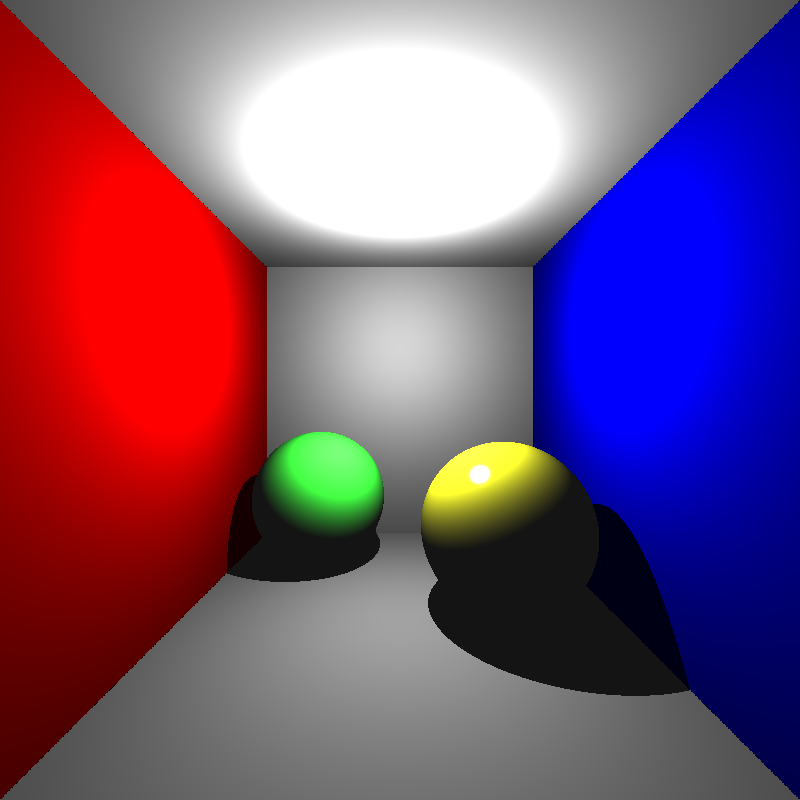
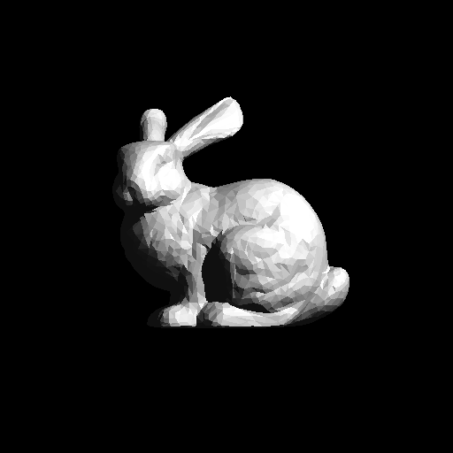
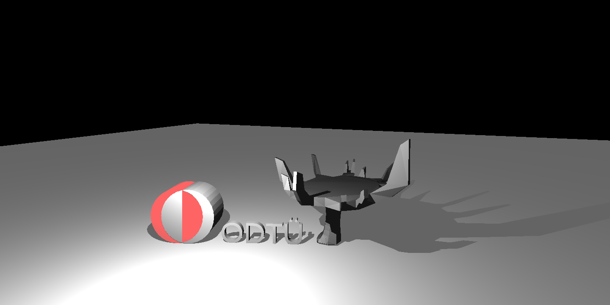
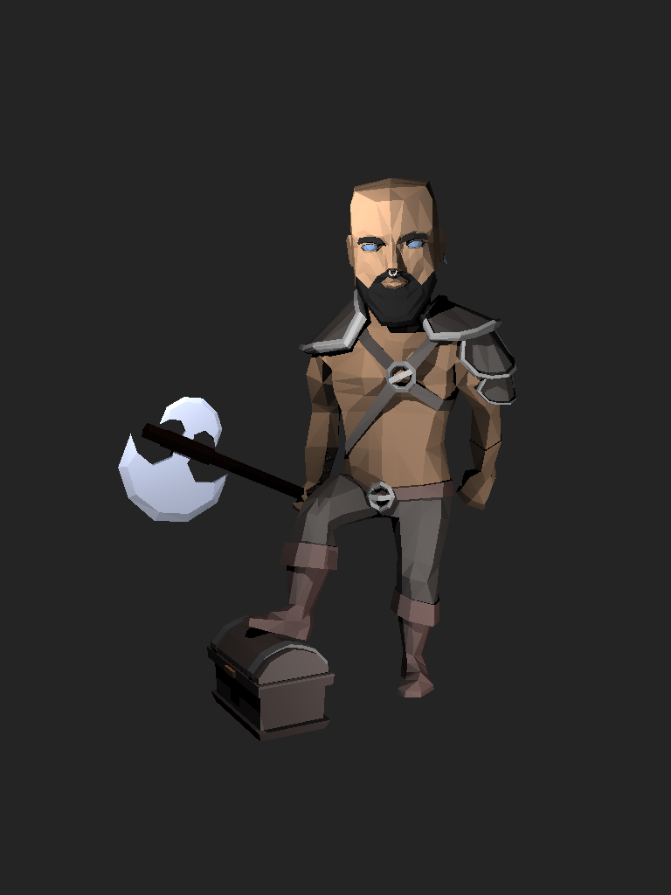
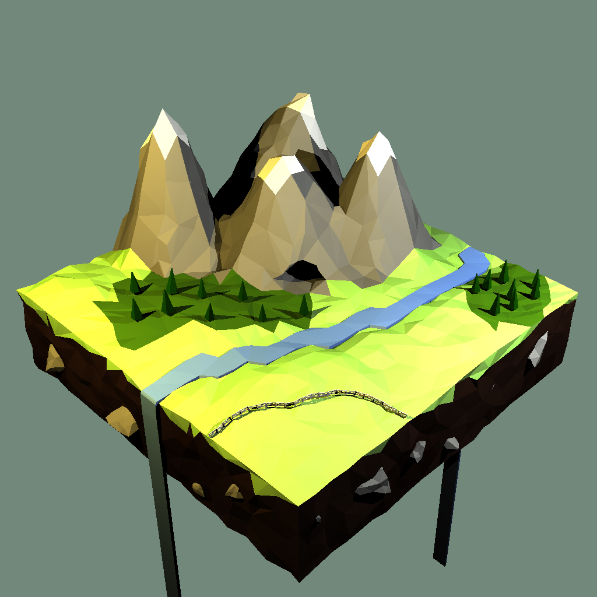
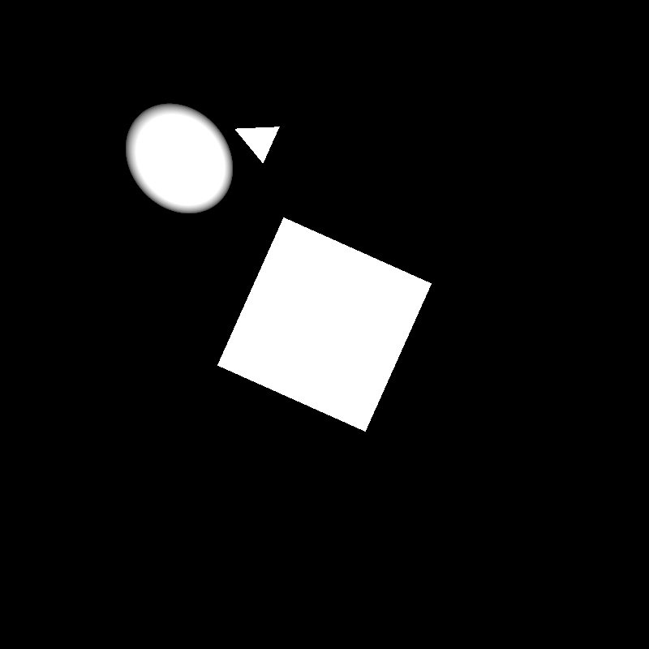
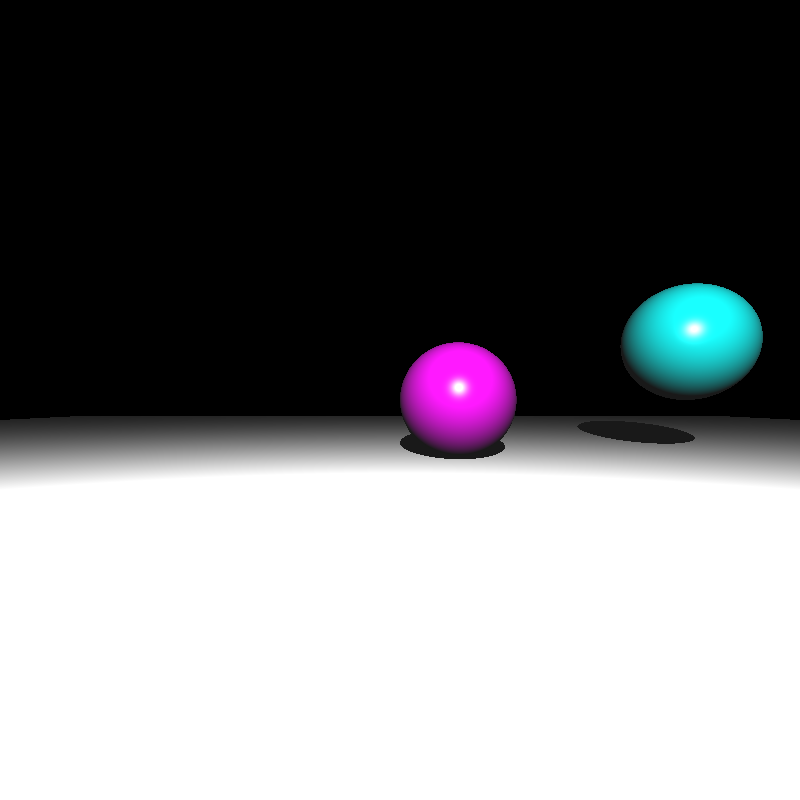
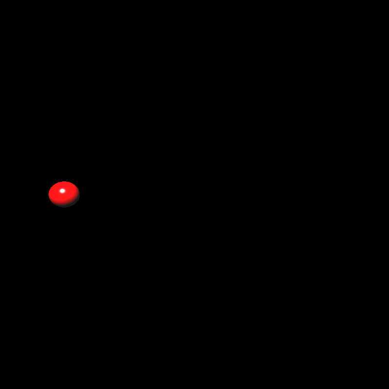

Last edited:
Hello,
In this blog post, I will talk about what did i do in the next 2 weeks for my ray tracer. Second homework subject was adding acceleration structures, geometric transformations and instancing to ray tracer.
Firstly, I had some problems from the first part of ray tracer. I could not render dielectrics and conductor at all. I fixed that issue, so I started to get results.
Secondly, I had some BVH acceleration structures in my raytracer but I want to optimize it more. In the previous version of raytracer -without the BVH-, rays was checking all objects and check whether they are intersecting or not; but in this version BVH structure create a bounding box by getting min and max point for x, y and z coordinates of all objects. In the creation of bounding box, firstly I sorted all objects according their one of the axis. I choose its axis like x, y, z, x and goes. Instead of choosing only one of the axis I get very big time improvement. After doing this I create a tree structure from the parent to leaf I started to checking is it intersecting with the box or not. If the intersection occurs on the parent node, the ray tracer checks both child whether the intersection occurs. If not it returns. In the building section of bvh tree, I added spheres and faces -which is a triangle with 3 vertices- for the triangles and meshes. To not lose the meshes information I add these face class to material infos etc. Before the next assignment I am planning to change these structures to more proper structures since it uses more memory than before, so I believe that this changes will make my ray tracer more optimize and faster.
For shadows and computing the color when they are intersection points, it is works as before. In the shadows, it will send rays to the point lights and check the objects between the intersection and point lights find is it shadow or not from the bvh tree created in the beginning.
There are some rendering times:
It takes 0.33s
It takes 0.12s
It takes 0.66s
It takes 0.48s
It takes 1.01s
I get these results my laptop which has i5 9300h and works with 4 thread.
Thirdly, I tried to implement transformations. After the parsing part, I create 4x4 transformation matrices and store them in the scene class. While creating the BVH tree, I create a new objects and multiply with the transformation matrices when I initialize the BVH tree structure. After that according to that new objects and faces, I build a BVH tree but unfortunately, I could not get good results. There are some results I get:
  Transformations and instancing was a very crucial parts of this assignment but I could not add it correctly due to lack of time since I had very important personal issues and work. Because of that I could not find enough time for debugging for transformations. In the next assignment, I will start before so that I can add this transformations and instancing correctly to continue properly.